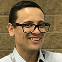
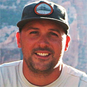
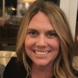
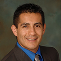
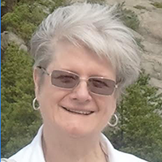
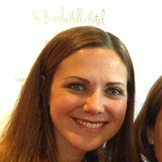

CalSWEC Graduate and Alumni Stories
Graduates of CalSWEC's Title IV-E Child Welfare Stipend Program and Mental Health Services Act (MHSA) Stipend Program can be found working in almost every county in the state, as well as in academia and other social work-related professions. Here they share their stories.
If you would like to share your story or know of someone whose story should be told, please contact Karen Ringuette, kmring@berkeley.edu.
Daniel Wilson, MSW (Sacramento State University—Child Welfare), finds fulfilment as a manager in the Critical Incident and Oversight Support Unit, Children and Family Services Division at CDSS and as a leader advocating for and bringing people together to create change. Read Daniel's story.
Rosie I. Hernandez (MSW, UC Berkeley—Child Welfare), fluent in Spanish and armed with a BA in Social Welfare and Chicano Studies and an MSW, is able to connect with and help vulnerable Latino communities as the Bilingual Senior Child Welfare Worker—Court Officer in Marin County Children and Family Services. Read Rosie's story.
 Jamie St. John (MSW, University of Southern California—Mental Health), who grew up interacting with social workers because of a sibling with a disability, is “paying forward the kindness that others have shown me” through her work as a substance abuse therapist and a therapist in private practice. Read Jamie’s story.
Jamie St. John (MSW, University of Southern California—Mental Health), who grew up interacting with social workers because of a sibling with a disability, is “paying forward the kindness that others have shown me” through her work as a substance abuse therapist and a therapist in private practice. Read Jamie’s story.
Ian Yuan-Jian Bohannon (MSW, UCLA—Mental Health), recognizing the stigma of seeking help in the mental health system, was inspired to become an agent of change and today is a psychiatric social worker on the Los Angeles County Department of Mental Health Psychiatric Mobile Response Team. Read Ian’s story.
Misty Shasceen Taylor (MSW, San Diego State University—Child Welfare), a Tribal Council member of the Iipay Nation of Santa Ysabel, was inspired by her mother to become a Tribal social worker and believes she has an obligation to help Tribal families heal because she’s had opportunities they have not. Read Misty's story.
Stevee Lopez (MSW, Fresno State University—Child Welfare) experienced such a supportive environment in Emergency Response in the Stanislaus County Community Services Agency that she pursued, and attained, a supervisor position so that she could continue to support the ER Unit. Read Stevee's story.

Kyle Miller (MSW, Sacramento State University—Child Welfare), in fulfilling a goal he’s always had of working with young people, today is deeply involved in ensuring foster youths’ empowerment and independence, as well as helping to address how they can be better served. Read Kyle’s story.
Kimberly Beckstead (MSW, San Diego State University—Mental Health [Integrated Behavioral Health]) finds inspiration in her nurturing childhood as she seeks to provide that same sense of safety, mastery, and hope to the people she works with, currently active duty Marines and Sailors. Read Kimberly's story.
Diamond McMillian (MSW, San José State University—Child Welfare) has always enjoyed working with children, but it is foster youth for whom she has an abiding passion. As an AB 12 social worker, she is excited that she will follow them until they age out of child welfare services. Read Diamond's story.
Najeeb Kamil (MSW, California State University, East Bay—Child Welfare), whose interest in social service/social justice work stems from Islam, his religion that emphasizes service and promotes justice for everyone, is living a life of service as a social worker in Santa Cruz County and as a volunteer in causes dear to him. Read Najeeb's story.
Daniel McKinnis (MSW, California State University, Fullerton—Child Welfare), took a chance on pursuing the MSW in child welfare and in his IV-E internship in Dependency Drug Court realized "a perfect fit" in a career he both loves and that fulfills his desire to help others. Read Daniel's story.
Shelby Boston (MSW, California State University, Chico—Child Welfare) may have fallen into social work “by accident,” but her journey from social worker to Director of the Butte County Department of Employment and Social Services is beyond mere serendipity. Read Shelby's story.
Aaron Cadore (MSW, UC Berkeley—Child Welfare), the son of immigrant Caribbean parents, has discovered that the skills he used in Child Protective Services are also applicable to Adult Protective Services. Read Aaron's story.
Stephanie Weldon (MSW, Humboldt State University—Child Welfare), Yurok, Tolowa, and Karuk, and an enrolled Yurok Tribal member, says, “I’ve always been involved, and I’ve always expected to give back to the community.” She’s been doing this in a big way, for both the Yurok and Humboldt County Social Services. Read Stephanie's story.
Ruby Garcia (MSW, California State University, San Bernardino—Child Welfare), currently a forensic interviewer for the Riverside County Child Assessment Center, has fulfilled her promise to be a role model for her son and a positive influence to underserved populations. Read Ruby's story.
Brandon Burton (MSW, University of Southern California—Child Welfare), the only child welfare social worker in Ventura’s newly formed Commercially Sexually Exploited Children (CSEC) Unit, has found to his surprise that his previous career in theater arts often augments his work as a social worker. Read Brandon's story.
Mary Pagan (MSW, Humboldt State University—Child Welfare) earned her BA—the first in her blue-collar family to graduate from college—and her MSW, both while working as a child welfare social worker in Lake County, proof that she has a fire in her belly for child welfare. Read Mary's story.
Luis Quintanilla (MSW, UCLA—Mental Health) credits his mother for inspiring him to strive to make the world a better place after his heartbreaking encounter at the age of 9 with children in extreme poverty in her home country of Bolivia. Read Luis’s story.
Aprille Flint (MSW, San José State University—Child Welfare) had originally set her sights on law school, but when life happened, she embraced motherhood and social work, where her passion for social justice is reflected in her current community engagement work. Read Aprille’s story.
Tech Tran (MSW, California State University, East Bay—Mental Health) developed his social work skills organically, as an immigrant youngster and as an 18-year-old who, along with his mother, was granted guardianship over his young niece and nephews. Read Tech's story.
Ruth Supranovich (MSW, San Diego State University—Child Welfare) has followed in the footsteps of her dedicated social worker parents and carved out a fulfilling career in CWS, management, and academia. Read Ruth’s story.
Omar López (MSW, San Diego State University—Child Welfare), today a clinical associate professor and assistant director of field education at USC's School of Social Work, credits the Title IV-E program for transforming his life both personally and professionally. Read Omar's story.
Jessica Diaz France (MSW, San Francisco State University—Mental Health) was motivated to pursue an education and a career in social work to address underlying mental illness that she saw go unaddressed in her work at a non-profit law firm. Read Jessica’s story.
Donna Thoreson (MSW, UC Berkeley—Child Welfare), who returned to college after 20 years, credits the Title IV-E Child Welfare Stipend Program for helping her gain a deeper understanding of the barriers facing children and families, thus enabling her to work more effectively on their behalf. Read Donna’s story.
Stephanie Welch (MSW, University of Southern California—Mental Health) realized an early passion to advocate for the de-stigmatization of mental illness and today is Senior Program Manager with the California Mental Health Services Authority. Read Stephanie’s story.
Michelle D. Love (MSW, UC Berkeley—Child Welfare) found her calling as well as an opportunity to grow professionally at Children & Family Services in the Alameda County Social Services Agency. Read Michelle’s story.